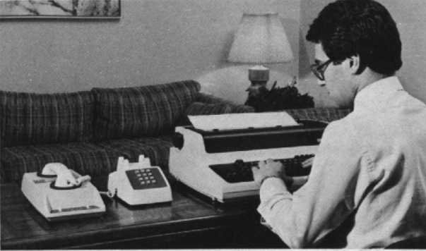
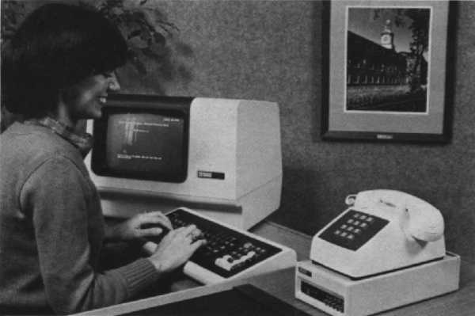
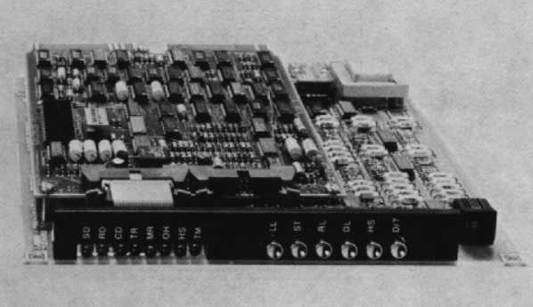
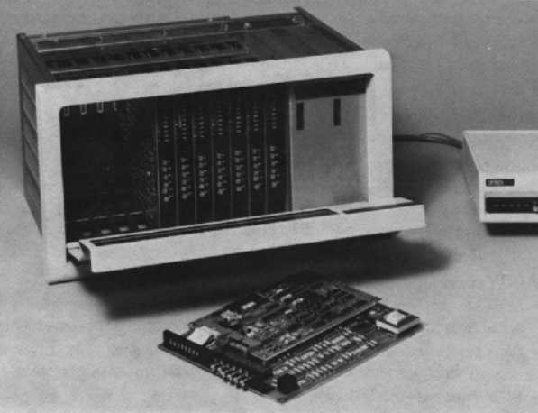
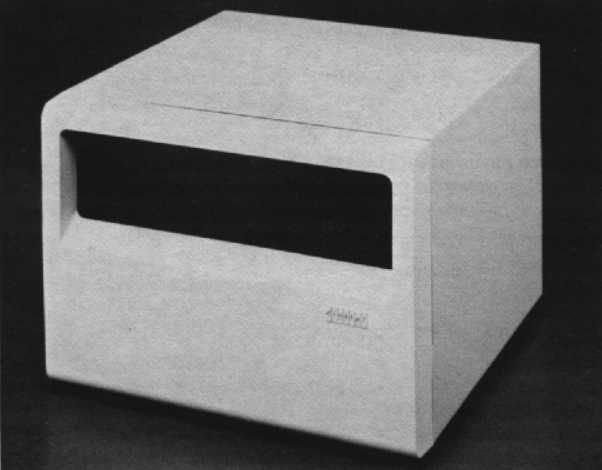

| Chapter 17 | Contents | Chapter 19 |
Chapter 18
Your system, whether composed of one computer and a single terminal or many computers and terminals using highly sophisticated software, forms a communications network. In order to transfer information between members of the network – CPU to CPU, CPU to terminal, or CPU to printer – you need data communication equipment. Modems and intelligent communications processors (ICPs) are the two most popular types. A critical part of the network, modems and ICPs are often the crucial factor in determining network throughput and reliability.
Data terminal equipment transfers information in a digital format, while telephone lines carry information in an analog format, continuously varying voltage and frequency. Thus, it is necessary to convert digital data to analog format for transmission over telephone line. This is performed by a modem. Information entering the communications link is modulated on a carrier wave. Information leaving the data link is demodulated so that only the original signal exists when it leaves the modem or an ICP with a modem. In effect, the information (digital signal) is piggybacked on the carrier wave, allowing it to be transmitted over great distances via the telephone network.
Data communications equipment is used in every work equipment – commercial, scientific, industrial, and manufacturing. Personal computers, office information systems, word processing workstations, and timesharing systems need data communications equipment to link them to other systems or to other databases.
Digital's modems and intelligent communications processors work with any Digital and most non-Digital processors running an operating system having a terminal driver utility, a communications interface or port, and an EIA terminal or printer.
When you decide to buy data communications equipment, there are several factors to consider.
A dialup modem allows a single user to tap into many different databases as work demands via public telephone lines. The cost of operating a dialup modem is low since only small amounts of data are being transmitted via telephone lines. The dialup modem gives you the greatest versatility since you are not restricted to a particular database. Digital offers the DF02 and DF03 family of modems.
Multiplexers, such as Digital's DFM series of Intelligent Communications Processors (ICPs), are better for a multiuser remote cluster environment where small groups need to access a central database. In this situation, you generally transmit data via leased lines. Since only the leasee has access to the line, data can be transmitted at a faster rate. Leased lines can be expensive, but for dedicated applications they are efficient and cost effective.
It is essential for your data communications equipment to be compatible with industry standards. Such standards prevent your application and database from being restricted from future growth. These standards, such as the Bell System's 212A, allow you to transmit data asynchronously at 300 or 1,200 bits per second, or synchronously at 1,200 bits per second. All Digital modems and intelligent communications processors meet industry standards.
Some telephone lines need to be used for both telephone calls and data transmission. If this is the case in your office, then you need a modem with the alternate voice/data feature. This feature enables your telephone line to be used for both telephone calls and data transmission. It is more cost effective since you do not need two separate lines – one line for telephone calls and a separate line for data transmission. The alternate voice/data feature is standard on Digital's DF02 and DF03 modems.
As your operation grows, your network must grow along with it. Your network probably contains equipment from different vendors. For your network to grow, there must be compatibility across the network. As hardware enhancements come along, you must be able to upgrade your existing hardware, not throw it away. As you add new equipment to your network, look for equipment that is similar in operation to existing equipment, so your staff will not require extensive retraining. Look at the different configuration options that are available.
The reliability of your modem and ICP is very important. As long as your data terminal equipment is working, your system – whether large or small – continues to transfer data. A system that stays up allows your staff to make efficient use of work time.
Unfortunately, there may be times when you are unable to transmit data. Support after the data communications equipment has been purchased is another factor to think about. It is valuable if you can perform a series of tests to find out where the problem lies. This way, you don't waste valuable time checking many different components – you can go directly to the malfunctioning one and fix it. If you have a service contract, you need to be able to pin-point where the problem exists, at the transmitting or the receiving end. If you need field service, you only want to pay for a call at the end that needs help, not the good end as well.
One of the most important considerations is whether or not you can select the baud rate. If the processor and the terminal operate at two different speeds, your modem or ICP can compensate for this by transmitting data at the rate the slower device can handle. Another consideration is whether the cable is included with the modem. Digital lets you order a cable, if you need it, and lets you specify the length required for your application.
Ask:
If the modem or intelligent communications processor is designed for customer installability and is sold with everything you need for operation, you can be all set to transmit data in less than 30 minutes. Always follow the manufacturer's installation manual to insure the best results.
|  |
The DF01-A acoustic coupler connects Digital's and other terminals to remote computing systems via ordinary telephone sets and the public switched telephone network. Designed for short interactive or batch sessions, the DF01-A is ideal for electronic mail or inquiry status applications, whether you're at home, in the office, or on the road. Portable and low cost, the DF01-A operates asynchronously at speeds from zero to 300 bits per second.
The DF01 is available for sale in the United States, Europe, and GIA. Contact your local Digital representative, dealer, or distributor for more information.
This product features:
It's easy to operate the DF01. Just set the duplex switch to the desired position – through slide switches, you can choose either full- or half-duplex operation – dial the required number, and listen for the high pitched carrier tone. When you hear the tone, insert the handset firmly into the rubber caps. When the carrier indicator comes on, you can then transmit and receive data. In addition, both EIA RS232-C and 20 milliampere (mA) current loop interfaces are standard in the DF01-A.
The DF01 is shipped complete with dual interface cable that mates the coupler with either EIA RS232-C or 20 milliampere interfaces. For installation, either connect the 20 mA terminal cable to the DF01 mate-n-lock connector or connect the DF01 cable EIA connector directly to an EIA terminal. If you want to use the 20 mA connector for EIA operation, install an EIA jumper.
Easy to maintain and reliable, the DF01 requires no preventative maintenance. You can even install it yourself.
No additional documentation is available for DF01.
Also of general interest are:
If you require information not contained in these documents, contact your local Digital representative, dealer, or distributor.
| Application: | Serial, asynchronous data |
| Operating Mode: | Full-duplex, two-wire |
| Data Rate: | 0-450 b/s |
| Telephone Line Requirement: | None, uses standard telephone handset |
| Certified for FCC Part 68 (Direct Connection): | Yes |
| Terminal Interface Standard: | EIA RS232-C and CCITT V.24 and V.28 compatible voltages |
| Power Consumption: | 3 W |
| Line Voltage: | 90-128 VAC rms |
| Line Frequency: | 60 Hz |
| Operating Temperature: | 5°C to 50°C (41°F to 122°F) |
| Relative Humidity: | 0% to 95% noncondensing, noncaustic |
| Height: | 7.9 cm (3.2 in) |
| Width: | 17.5 cm (6.9 in) |
| Depth: | 32 cm (12.5 in) |
| Weight: | 1.3 kg (2.8 lb) |
|  |
The DF02 is a freestanding, full-duplex, asynchronous direct-connect modem that allows terminals and processors to communicate over unconditioned dialup or two-wire leased lines. This direct connection reduces noise and increases the reliability of the telephone line connection over that provided by acoustically coupled modems.
The DF02 modem is designed to serve the needs of Digital's users who are involved in low-speed networking applications. It operates at data rates between zero and 300 bits per second and is functionally compatible with the Bell System 103J Data Set. Due to the Bell System's "Lease Only" policy and the lack of field support by the majority of independent vendors, the DF02 has the additional advantage of being fully supported by Digital's service organization.
The DF02 is a high-quality, reliable product that features both local and remote test capabilities, as well as capabilities for manually or automatically originating and answering calls. It is compatible with all of Digital's asynchronous data communication controllers that support the EIA RS232-C interface standard and that offer PSTN modem control, for example, the DH11, DZ11, DZV11, and DL11-E. The DF02 is approved by the Federal Communications Commission (FCC) for direct connection to the Public Switched Telephone Network (PSTN) via a standard RJ11C modular jack. The DF02 also offers alternate voice/data capabilities when a standard telephone set is used to originate and answer calls manually.
The unit provides a variety of other options and features, designed to allow for maximum flexibility in the network environment. A standard factory-installed customer configuration has been developed to meet the requirements of the typical Digital equipment user. Only if you have special requirements will you need to reconfigure the unit.
The DF02 is offered in two basic configurations – the DF02-AA and the DF02-AC. Both configurations provide manual originate, manual answer, and automatic answer modes. In addition, the DF02-AC provides an automatic originate (call) mode through the use of the serial asynchronous automatic calling unit (ACU) that's an integral part of the unit.
The DF02 is available for sale only in the United States. Contact your local Digital representative for more information.
The major features of the DF02 are:
The DF02 can originate or answer calls to or from remote stations both manually and automatically. When the modem places a call, it is in the originate mode. When responding to a call, it is in the answer mode. Operation is quite simple.
When you're originating a call manually, dial the number. When the answering tone is received, place the Data/Talk button in the Data position and replace the telephone handset. When the carrier light comes on, data transmission begins. An incoming call can be answered automatically (without attendant intervention) or manually by the attendant. When answering manually, you, when ready, place the Data/Talk button in the Data position and replace the telephone handset. When the carrier light comes on, data transmission begins.
Operating procedures for the DF02-AC are the same as for the DF02-AA except that the DF02-AC allows you to dial the desired number through the terminal keyboard rather than using the telephone and it allows a properly programmed unattended system to initiate a call.
The DF02 is designed to be installed by either you or a Digital Field Service technician. Since the DF02 is a freestanding device, it needs no mounting hardware. A standard telephone handset, when used with the DF02, can be placed on top of the case. To install the DF02, unplug the four-contact RJ11C voice jacks connecting the telephone to its wallbox and insert the jack into the rear panel of the DF02. Plug the DF02's telephone cable into the wallbox where the telephone was previously connected. Connect the Electronic Industries Association (EIA) data cable into the 25-pin connector on the rear panel of the DF02. Then plug the DF02's AC line cord into a three-prong, 120-volt, 60-Hertz wall outlet.
The DF02 requires no preventative maintenance. In addition, the DF02 is backed by an available Field Service contract to provide onsite maintenance.
The literature cited above is available as Hardware Documentation Kit, FB-DF02/JB. See your DECdirect™ catalog for ordering information.
Also of interest are:
If you require information not contained in these documents, contact your local Digital representative, dealer, or distributor.
| Application: | Serial, binary, asynchronous data |
| Operating Mode: | Full-duplex, two-wire |
| Data Rate: | 0-300 b/s |
| Telephone Line Requirement: | Voice grade 3002 type PSTN channel with direct connection via RJ11C |
| Certified for FCC Part 68 (Direct Connection) | Yes |
| Terminal Interface Standard: | EIA RS232-C compliance for FCC part 15J (RFI/EMI) |
| Power Consumption: | 12 VA |
| Line Voltage: | 90-128 VAC rms |
| Line Frequency: | 57-63 Hz |
| Operating Temperature: | 5°C to 50°C (41°F to 122°F) |
| Relative Humidity: | 0% to 95% noncondensing, noncaustic |
| Data Rate: | 110 or 300 b/s |
| Operation: | Pulse dialing |
| Input Format: | Asynchronous, serial binary. ASCII† |
| Storage: | 16 digits stored for dialing/redialing |
| † I/O requirements of your operating system or application program must be considered when autodialing through the serial RS232-C interface. | |
| Height: | 6.9 cm (2.5 in) |
| Width: | 14.3 cm (5.5 in) |
| Length: | 27.7 cm (10.9 in) |
| Weight of DF02-AA: | 2.7 kg (5.9 lb) |
| Weight of DF02-AC: | 2.9 kg (6.3 lb) |
|  |
With the rapid growth of office automation and small business systems, the need for data communication becomes increasingly more important. Word processing stations, electronic mail networks, and record control systems rely heavily on the transmission of data to remote locations.
The DF03 is a cost-competitive, 300/1,200 bits per second, stand-alone, direct-connect modem. If your application involves low-to-medium-speed networking applications or timesharing environments, the DF03 is designed for you. If gives terminals and processors the capability of full-duplex, synchronous/asynchronous, binary, serial data communications over two-wire public switched telephone network (PSTN) facilities.
A communications network may consist of a CPU and a single terminal or of many widely separated remote system nodes. The freestanding DF03 can transfer data between CPUs and remote terminals or between CPUs. Lightweight and compact, it can be easily positioned on a desk or table close to the computer or terminal. The DF03's full-duplex, 1,200-bits-per-second, synchronous mode of operation is useful for CPU-to-CPU communications and block mode terminal applications.
Low-speed operation (0 through 300 bits per second) is asynchronous, binary Frequency Shift Keying (FSK), while medium-speed operation (1,200 bits per second) can be either character-asynchronous or bit-synchronous, Quarternary Differential Phase Shift Keying (QDPSK). The DF03 is functionally compatible with the Bell System 103J (low-speed applications) and 212A (medium-speed applications) Data Sets. It is approved by the FCC for direct connection to the public switched telephone network via a standard RJ11C modular voice jack.
The DF03 is offered in four basic configurations:
The DF03 offers these major features:
Originating calls and answering calls manually with the DF03 modems is easy. After setting the appropriate switches, which are described in detail in the DF03 Modem Family User Guide, and verifying the status of the modem, you dial the desired number on the telephone. To answer a call manually, just verify the status of the modem, answer the call, and set the appropriate switch on the modem.
The DF03 automatic call option enables the modem to be operated unattended. To establish communication with a remote location, the automatic call unit option dials the desired telephone number using serial binary data. The automatic call feature provides either of the following capabilities: keyboard dialing from a terminal, or program dialing from an unattended processor.
DF03 modems and modem modules are factory-configured for compatibility with most data communications equipment. In some cases, however, you will want to choose different options. If this is the case, check the DF03 Modem Family User Guide.
The DF03 is very reliable and easy to maintain. No preventative maintenance is necessary. You can install it yourself, or have Digital's Field Service personnel install it. Field Service maintenance contracts are available for onsite service.
Status lights and switches, located on the front panel of the DF03 units, are used to monitor and control the operation of the modem. Modem loopback test features allow for testing the local terminal interface and modem. Additional test features verify the operation of the communication link and remote modem. The modems can also perform a self-test to ensure that the internal modem logic is functioning properly. These tests effectively decrease maintenance costs and network downtime.
Because the DF03 modems are approved by the FCC for direct connection to telephone lines, the Data Access Arrangement (DAA) equipment usually required for installation is not necessary. The single data port for both the autocall unit (ACU) and the modem decreases hardware costs and physical space requirements. The RJ11C modular jack on the DF03 freestanding modems are easily connected to standard telephone outlets in the United States and Canada. You can quickly disconnect the DF03 and relocate it to another telephone outlet as needed.
The literature cited above can be obtained as Hardware Documentation Kit, FB-DF02/JB, from Digital's DECdirect™ catalog.
Also of interest are:
If you require information not contained in these documents, contact your local Digital representative, dealer, or distributor.
| DF03-AA/AC | DF03-RA/RC |
|---|
| Application: | Serial, binary, synchronous or asynchronous data | Serial, binary, synchronous or asynchronous data |
| Operating Mode: | Full-duplex, two-wire | Full-duplex, two-wire |
| Data Rate: | ||
| Low Speed: | 0 – 300 b/s (async) | 0 – 300 b/s (async) |
| High Speed: | 1,200 b/s (sync or async) | 1,200 b/s (sync or async) |
| Telephone Line Requirements: | Voice grade PSTN line with RJ11C termination | Voice grade PSTN line with RJ21X termination (multiline) |
| Certified for FCC Part 68 (Direct Connection): | Yes | Yes |
| FCC Part 15: | Verified for Category B (home and computer environment) | Verified for Category A (computer environment) |
| Terminal Interface: | EIA RS232-C/CCITT V.24 and V.28; 25-pin cinch connector | EIA RS232-C and RS423-A (up to 60.9 m/200 ft)/CCITT V.24 and V.28; 25-pin cinch connector |
| Power Consumption: | 13.7 VA at 120 VAC/60 Hz | 84 VA at 120 VAC/50 Hz |
| Line Voltage: | 90-128 VAC rms | 90-128 VAC rms |
| Line Frequency: | 57-63 Hz | 57-63 Hz |
| Voltage Protection: | ¼-A fuse | 2.5-A breaker |
| Operating Temperature: | 5°C to 50°C (41°F to 122°F) | 5°C to 50°C (41°F to 122°F) |
| Relative Humidity: | 0% to 95% noncondensing, noncaustic | 0% to 95% noncondensing, noncaustic |
| Height: | 6.9 cm (2.5 in) | 20.3 cm (8.0 in) |
| Width: | 14.3 cm (5.5 in) | 2.2 cm (0.85 in) |
| Length: | 27.7 cm (10.9 in) | 26.4 cm (10.4 in) |
| Weight: | 2.7 kg (5.9 lb) | 0.7 – 0.9 kg (1.5 – 2.0 lb) |
| ANL – analog loop back | LL – local loop (analog loop back) | |
| ST – self-test | ST – self-test | |
| RDL – remote digital loop back | RL – remote loop (remote digital loop back) | |
| DTL – digital loop back | DL – digital loop back | |
| RJ11C telephone line test jack |
| Carrier, Data Terminal Ready, Data Set Ready, High Speed, Test Mode | Send Data, Receive Data Carrier, Data Terminal Ready, Data Set Ready (Modem Ready), Off Hook, High Speed, Test Mode |
| Data/Talk – Data/Talk Selection | Data/Talk – Data/Talk Selection | |
| HS – High/Low Speed Selection | HS – High/Low Speed Selection |
|  |
The DF100-RM multiple-modem enclosure is cost-effective when more than five centrally located remote connections are required. It gives you the flexibility to integrate new modems within the enclosure for future expansion. The modem enclosure supports either Public Switched Telephone Network (PSTN) or Private/Leased Telephone Network (P/LTN) applications. The type of modem or modem configuration is determined by the synchronous and asynchronous data formats and has the capability of either 0-to-300 bits-per-second of 1,200-bits-per-second operation. This flexibility allows you to enhance your network application at no additional cost.
Easily installed into a 48.3-cm (19.0-in) cabinet or rack and requiring only 26.7-cm (10.5-in) of vertical mounting space, this space-saving enclosure houses up to 12 DF03-RA/RC single-card modem modules. The modem connections use the standard RS-232C 25-pin cinch connector. The rack enclosure with a standard 120-volt power supply also accepts a redundant power regulator option (DF100-PR), which allows it to assume the power load if the primary supply fails.
The DF100-RM rack enclosure uses the DF03-RA and DF03-RC modems. Please see the preceding description and specifications.
You can install the DF100-RM easily. When a rack-mount modem configuration is used, system availability is enhanced because more ports are available for incoming and outgoing calls. No preventative maintenance is necessary. It can also be installed by Field Service personnel. Field Service maintenance contracts are available for onsite service.
The literature cited above can be obtained as a Hardware Documentation Kit, FB-DF03/JB, from Digital's DECdirect™ catalog.
Also of interest are:
If you require information not contained in these documents, contact your local Digital representative, dealer, or distributor.
| Capacity: | 12 individual modem modules |
| Telephone Line Requirement: | Ability to connect to 12 telephone lines using any mixture of PSTN lines with RJ21X service and private/leased lines with four-position connector |
| Mounting Requirements: | Standard 48.3 cm (19 in) computer cabinet or rack |
| Power Consumption: | 84 VA at 120 VAC/60 Hz |
| Line Voltage: | 90-120 |
| Line Frequency: | 57-73 Hz |
| Voltage Protection | 2.5-A breaker |
| Operating Temperature: | 5°C to 50°C (41°F to 122°F) |
| Relative Humidity: | 0% to 95% noncondensing, noncaustic |
| Height: | 26.7 cm (10.5 in) |
| Width: | 48.3 cm (19.0 cm) |
| Depth: | 34.3 cm (13.5 in) |
| Weight: | 12.3 kg (27 lb) – without modules |
|  |
Digital's DFM series of freestanding Intelligent Communications Processors (ICPs) are based on statistical multiplexing concepts. Designed to allow remotely located terminals to share a common, composite communications link, the multiplexer eliminates the need for individual modems and is an efficient way for you to cluster terminals at a remote site. Multiplexers are ideal for large companies with terminal clusters in branch offices, such as insurance companies; educational and personal computer environments; and large corporations with multiple offices throughout the country, with central area clusters of activity.
The DFM series offers communication cost savings, as well as a variety of new features such as synchronous data handling, channel switching and contention, speed conversion, ease of use, and expandability up to 16 channels.
At present, Digital offers the following variations of the DFM series:
Digital's DFM series offers a variety of enhancements over today's more traditional multiplexers. These enhancements make the DFM series Digital's first low-cost intelligent communications processor by providing four categories of ICP functions – statistical multiplexing, intelligent interfacing, channel switching and contention, and network management and control.
Statistical multiplexing techniques concentrate four to 16 EIA RS-232-C data channels over one high-speed communications link. These data channels interface to terminals, printers, personal computers, workstations, computer ports, and any RS-232-C compatible device.
Intelligent Interfacing features are unique and user-selectable to provide enhanced network flexibility. These features are not generally available in traditional modem applications.
The DFM series of ICP's provide network flexibility through asynchronous channel switching and contention. To obtain the desired resource, these features allow you the ability to select any data channel that is configured for switching at either the local ICP end of the network or the remote end.
The DFM series of ICPs have an extensive set of network management functions to set-up and monitor operating characteristics such as link efficiency, channel utilization, information, and error statistics. In addition, a complete set of test functions allow you to perform fault isolation from both central and local locations.
The DFM Intelligent Communications Processor provides six front panel pushbutton switches. These switches allow you to select initial operating characteristics that are associated with modem facilities and manual maintenance mode. There are also eight front panel LED indicators that verify modem signals, link readiness, error condition flags, and channel activity. Because of the ICP's microprocessor design and built-in software, most of the variables that characterize the DFM network configuration are selected and embedded in the system by software control. This is done by using a terminal that is attached to a special connection called the supervisory command channel. Therefore, your terminal's keyboard is the most significant control for the ICP.
The following summarizes the pushbutton switches and LED indicators found on the integral modem of the ICP.
When pressed in, the integral modem is placed in analog loopback mode.
When pressed in, the integral modem outputs a test pattern to all devices attached to that DFM unit.
When pressed in, this switch forces the integral modem at the other end of the link into digital loopback mode.
This switch, when pressed in, places the integral modem in digital loopback. This allows the integral modem at the other end of the link to execute loopback.
When pressed in, the fallback feature is enabled. The fallback speed is determined by the position of the fallback speed switch (FS).
This switch selects one of two possible fallback speeds (7200 or 4800 b/s) and is functional only if fallback is enabled (FB pushed in.) When the FS switch is out, 7200 b/s is selected, while when in, 4800 b/s is selected.
When on, this LED indicates that the integral modem is transmitting data.
When this LED is lit, the integral modem is receiving data.
When on, this indicates that an audio carrier from a remote station is present.
When on, this LED indicates that the integral modem is ready to transmit data.
When on, this indicator tells you that the DFM is requesting transmission.
When blinking, the LED indicates that the quality of the telephone line is marginal. When the LED is on, it indicates that the quality of the line is poor.
When on, this indicator means that the integral modem is in fallback mode due to a high level of errors at the higher speed. Fallback speed is determined by switch FS.
When the light is on, the integral modem is in the test mode. More information about operator features and programming information can be found in the DFM Series Intelligent Communications Processor User Guide.
You can verify the integrity of individual DFM units by using the System Automatic Self-Test. This determines the condition of hardware components and elements, which are not properly a part of a channel or link.
Each DFM automatically runs through a self-test at power on. This test checks the hardware components to ensure that the system is operational. A restart command from the supervisory command sequence effectively duplicates a power on without going through the password sequence.
A successful power on or restart is indicated by the Device Ready (DR) LED. When the LED comes on, it indicates that self-test has passed. If self-test fails, the failure is reported by front panel LEDs.
| Multiplexing technique | Statistical time division, dynamic bandwidth allocation with variable block length. |
| Multiplexing efficiency | Typically 300% to 500%. Can reach 800% in certain applications. |
| System design | Multimicroprocessor design with internal DMA bus structure. |
| Channel buffering | 32K bytes for each 4 channel expansion module and 64K bytes for each 8 channel expansion module. |
| System configuration | All configuration parameters are done using the supervisory command channel or user data channel with simple to use commands similar to Digital VAX/VMS command structure. |
| Supervisory command channel | A special terminal connection that allows the system manager to issue commands to program, monitor, and test the DFM system. Access to command level is password protected. The supervisory command channel program can also be accessed from any data channel if program is not in use. |
| Network control | All network functions (programming, monitoring, and diagnostics) are performed using the Supervisory Command Channel Program. Diagnostic capabilities include system, channel, and link testing. Broadcast messages can be issued by the system manager. |
| Network monitoring | Monitoring commands allow status and errors to be read for the system, channels, and link. All error counters are cleared by a separate command. |
| Parameter memory | All configuration parameters are stored in non-volatile, power independent memory (EPROM). |
| Aggregate speed | Maximum aggregate speed of 153.6 K b/s (9600 b/s simultaneously on all channels). |
| Channel end-to-end delay | Varies with speed of channel and link, from 16 ms to 140 ms; typically less than 60 ms. |
| Capacity | 4, 8, 12, and 16 channel models |
| Asynchronous channels | Asynchronous mode for all channels. These channels can be configured dedicated or switched. |
| Synchronous channels | Synchronous mode supported on one-half of the channels. Each sync channel can support message blocks of 512, 1024, 2048, and 4096. |
| Protocol | Multiplexes all synchronous data when RTS/CTS flow control is selected independent of protocol. Handles all protocol not using RSTS/CTS control in transparent mode. Special handling for DDCMP protocol. No ARQ performed on synchronous data channels. |
| Switching | Asynchronous switched channels allows users the ability to select any other switched channel using simple commands. |
| Contention | Asynchronous switched channels can contend for available switched channels. Users can camp-on for busy channels. |
| Security | Switched channels have group access codes to restrict users from protected channels. |
| Group selection | Switched channel users can request a particular channel group and DFM searches for first available channel and establishes connection. |
| Parameter intermix | There are no intermix restrictions. |
| Automatic parameter upgrade | Channel parameter changes at either end of the network are transferred to each end automatically with upline/downline time. |
| Non-interfering | Channel programming does not interfere with other active channels. |
| Speeds | 50, 75, 110, 134.5, 150, 300, 600, 1200, 2400, 4800, 9600 b/s; Autobaud 150 to 9600 b/s using CR character; Samebaud: split speeds of 1200/75, 2400/150, 75,1200, or 150/2400 b/s. Synchronous 1200 to 9600 b/s (internal or external clocks). |
| Speed conversion | Each end of a channel can have different speeds, with automatic speed conversion at each end. |
| Data format | Async data – 5, 6, 7 or 8 bit data with even, odd or no parity; 1, 1.5 or 2 stop bits async channels. Switched async channels must all have the same data format selections. Sync channels support 8-bit ASCII or EBCDIC with 2, 4 or 6 SYN characters. |
| Flow control | XON, XOFF and EIA modem control RTS/CTS. |
| Flow control conversion | Each channel end can have different flow control conversions, with automatic translation. |
| Fill character buffering | Allows specified number of NUL characters to be transmitted following a CR character. |
| Echoplex | Local echo selection at either channel end or both ends. |
| Priority | Three levels of priority for each channel providing for variable message frames. High: for large data requirements; Low: for background non-critical data; Normal: for typical data requirements in full-duplex configurations. |
| EIA dial-up control | Programmable EIA dial-up modem control allows DFM to control automatic answer and call disconnect at either end or both ends. |
| Interface | EIA RS-232-C, CCITT V.24, V.28, 25-pin female connector. |
| EIA signals | Four full-duplex EIA control signals per channel. |
| Status indicators | Channel activity LED for each channel; channel utilization statistics; channel error LED and error statistics. |
| Messages | Allows either or both ends of the channel to receive broadcast and error messages. |
| Capacity | Single concentrated link either synchronous or NRZI asynchronous with start and stop bits removed. |
| Speeds | Synchronous 1200 to 19200 b/s; NRZI asynchronous 9600 b/s. |
| Protocol | Conforms to ADCCP ANSI Std X3.66. Protocol is a superset of X.25 level II, SDLC and HDLC. |
| Error detection correction | ARQ error correction with 16 bit CRC. |
| Satellite delay | Link protocol functions are enhanced for satellite networks of one hop. |
| Interface | EIA RS-232-C, CCITT V.24, V.28, 25-pin male connector. |
| Integral modems | Accepts a Digital modem option. This option is field installable. |
| Voltage | 115 or 2300 Vac, 50/60 Hz |
| Power consumption | 92 W |
| Temperature | 0°C to 40°C (32°F to 104°F) |
| FCC Part 15 | Meets FCC Part 15J – Class A operation |
| Relative Humidity | 10% to 90%, noncondensing |
| Altitude | 2.4 km (8,000 ft) |
| Height | 22.5 cm (8.9 in) |
| Width | 31.5 cm (12.4 in) |
| Depth | 31 cm (12.3 in) |
| Weight | 6.8 to 8.6 kg, depending on configuration (15 - 19 lb) |